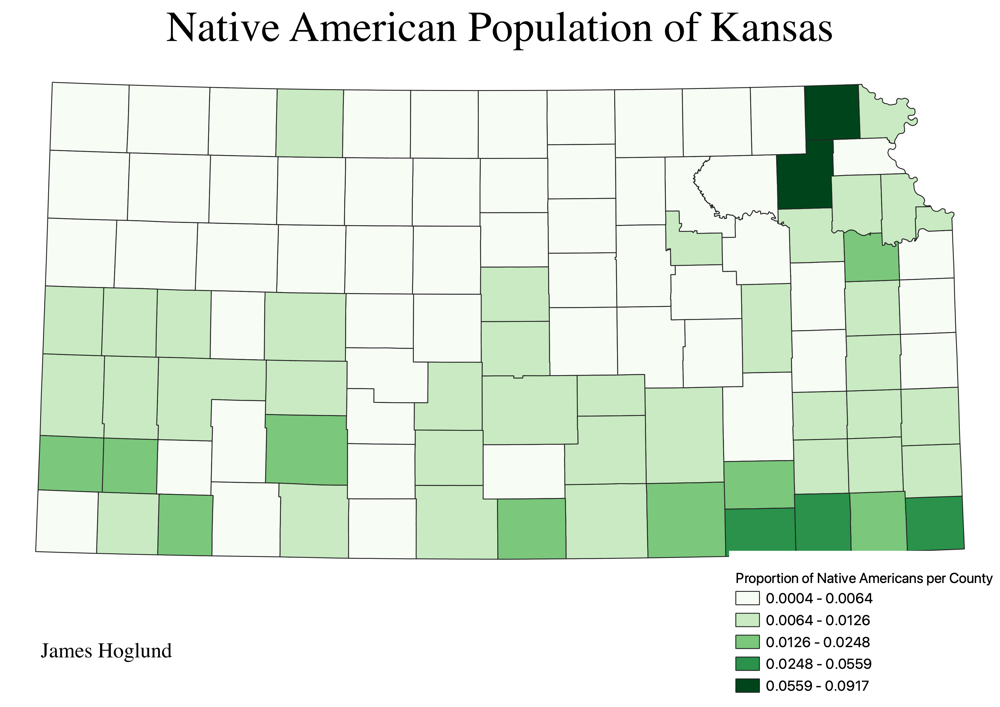

Homework 6: Census data choropleth
James Hoglund
This map shows the proportions of Native Americans per county in Kansas. As you can see, the counties with the highest proportion are in the northeastern part of the state. There is also a concentration of Native Americans in the southeastern part of the state.

Data used for this project
CSV dataset
Link to shapefile